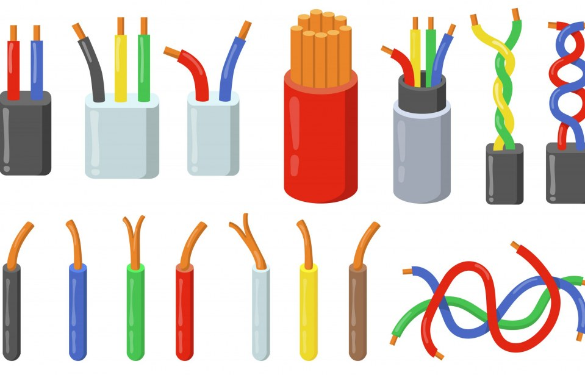

Painel de Comunicação Inteligente
Celular com app CAA, botões físicos feitos com cabos e sensores. Resposta sonora e visual personalizada.
Público-alvo: pessoas com autismo, deficiência de fala ou paralisia cerebral.
Tecnologia sustentável e inclusão em um só lugar.
Reaproveitamos lixo eletrônico para criar soluções acessíveis e práticas para pessoas com deficiência. Celulares velhos, pilhas usadas, cabos e outros materiais ganham nova vida como ferramentas de inclusão, comunicação e autonomia.
 15.09.57_04b8d3a3.jpg)
 15.09.57_c0cc2ad0.jpg)
Celular antigo: usado como painel de comunicação, controle de ambiente ou envio de alertas automáticos.
.jpeg)
Pilhas usadas: estrutura para botões táteis com retorno físico.
Cabos e fios velhos: base para circuitos e conexões entre botões e dispositivos.
Teclados velhos: teclas reutilizadas em painéis físicos acessíveis.
Celular com app CAA, botões físicos feitos com cabos e sensores. Resposta sonora e visual personalizada.
Público-alvo: pessoas com autismo, deficiência de fala ou paralisia cerebral.
Botão com pilhas e fios que envia mensagem de socorro via WhatsApp com localização.
Público-alvo: idosos, cadeirantes, pessoas com mobilidade reduzida.
Celular com app de automação e painel com botões táteis. Liga luz, ventilador ou abre portão.
Público-alvo: tetraplégicos, idosos, pessoas com deficiência visual.
Botão aciona som, luz ou vibração. Mensagem como “Ajuda aqui!”
Público-alvo: pessoas com deficiência visual ou auditiva.
| Função | Dispositivo Usado | Ação |
|---|---|---|
| Comunicação | Celular com LetMeTalk | “Estou com fome” |
| Chamar ajuda | Celular com MacroDroid | Mensagem no WhatsApp |
| Ligar luz | Celular com Google Home | Ligar/desligar luz |
| Alerta sonoro | Buzzer ou speaker | “Ajuda aqui!” |
Fios e cabos usados como base para ensinar circuitos simples e noções de eletrônica básica para crianças em oficinas inclusivas.
